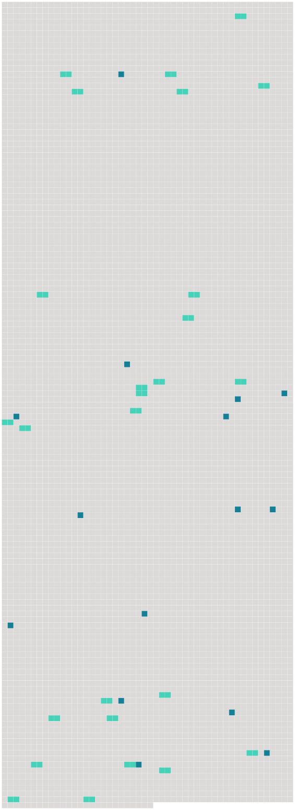

Longueur nb maillons : 41 mentions |
|
0039 -0049 [15 phrases]
CHAPITRE II
Dans le transport [des passagers] , un titre de transport individuel ou collectif doit être délivré, contenant : [2 phrases]
Si un tel autre moyen est utilisé, le transporteur offrira de délivrer [au passager] un document écrit constatant les indications qui y sont consignées. [1 phrases]
Le transporteur délivrera [au passager] une fiche d'identification pour chaque article de bagage enregistré. [1 phrases]
Il sera donné [au passager] un avis écrit indiquant que, lorsque la présente convention s'applique, elle régit la responsabilité des transporteurs en cas de mort ou de lésion ainsi qu'en cas de destruction, de perte ou d'avarie des bagages, ou de retard. [58 phrases]
CHAPITRE III
Le transporteur est responsable du préjudice survenu en cas de mort ou de lésion corporelle subie par [un passager] , par cela seul que l'accident qui a causé la mort ou la lésion s'est produit à bord de l'aéronef ou au cours de toutes opérations d'embarquement ou de débarquement. [5 phrases]
Si le transporteur admet la perte des bagages enregistrés ou si les bagages enregistrés ne sont pas arrivés à destination dans les vingt et un jours qui suivent la date à laquelle ils auraient dû arriver, [le passager] est autorisé à faire valoir contre le transporteur les droits qui découlent du contrat de transport. [12 phrases]
Article 19 [2 phrases] Lorsqu'une demande en réparation est introduite par une personne autre que [le passager] , en raison de la mort ou d'une lésion subie par [ce dernier] , le transporteur est également exonéré en tout ou en partie de sa responsabilité dans la mesure où il prouve que la négligence ou un autre acte ou omission préjudiciable de [ce passager] a causé le dommage ou y a contribué. [1 phrases]
Article 21
Pour les dommages visés au paragraphe 1 de l'article 17 et ne dépassant pas 100000 droits de tirage spéciaux par [passager] , le transporteur ne peut exclure ou limiter sa responsabilité. [1 phrases]
Le transporteur n'est pas responsable des dommages visés au paragraphe 1 de l'article 17 dans la mesure où ils dépassent 100000 droits de tirage spéciaux par [passager] , s'il prouve : [1 phrases]
En cas de dommage subi par [des passagers] résultant d'un retard, aux termes de l'article 19, la responsabilité du transporteur est limitée à la somme de 4150 droits de tirage spéciaux par [passager] [1 phrases] Dans le transport de bagages, la responsabilité du transporteur en cas de destruction, perte, avarie ou retard est limitée à la somme de 1000 droits de tirage spéciaux par [passager] , sauf déclaration spéciale d'intérêt à la livraison faite par [le passager] au moment de la remise des bagages enregistrés au transporteur et moyennant le paiement éventuel d'une somme supplémentaire.
Dans ce cas, le transporteur sera tenu de payer jusqu'à concurrence de la somme déclarée, à moins qu'il prouve qu'elle est supérieure à l'intérêt réel [du passager] à la livraison. [17 phrases] Toutefois, les États qui ne sont pas membres du Fonds monétaire international et dont la législation ne permet pas d'appliquer les dispositions du paragraphe 1 du présent article, peuvent, au moment de la ratification ou de l'adhésion, ou à tout moment par la suite, déclarer que la limite de responsabilité du transporteur prescrite à l'article 21 est fixée, dans les procédures judiciaires sur leur territoire, à la somme de 1500000 unités monétaires par [passager] ; 62500 unités monétaires par [passager] pour ce qui concerne le paragraphe 1 de l'article 22 ; 15000 unités monétaires par [passager] pour ce qui concerne le paragraphe 2 de l'article 22 ; et 250 unités monétaires par kilogramme pour ce qui concerne le paragraphe 3 de l'article 22. [20 phrases]
Article 28 [1 phrases]
Article 29 [20 phrases]
En ce qui concerne le dommage résultant de la mort ou d'une lésion corporelle subie par [un passager] , l'action en responsabilité peut être intentée devant l'un des tribunaux mentionnés au paragraphe 1 du présent article ou, eu égard aux spécificités du transport aérien, sur le territoire d'un État partie où [le passager] a [sa] résidence principale et permanente au moment de l'accident et vers lequel ou à partir duquel le transporteur exploite des services de transport aérien, soit avec ses propres aéronefs, soit avec les aéronefs d'un autre transporteur en vertu d'un accord commercial, et dans lequel ce transporteur mène ses activités de transport aérien à partir de locaux que lui-même ou un autre transporteur avec lequel il a conclu un accord commercial loue ou possède. [1 phrases]
Aux fins du paragraphe 2 :
La nationalité [du passager] ne sera pas le facteur déterminant à cet égard. [18 phrases]
Au cas d'un tel transport, [le passager] ou [ses] ayants droit ne pourront recourir que contre le transporteur ayant effectué le transport au cours duquel l'accident ou le retard s'est produit, sauf dans le cas où, par stipulation expresse, le premier transporteur aura assuré la responsabilité pour tout le voyage. [1 phrases] S'il s'agit de bagages ou de marchandises, [le passager] ou l'expéditeur aura recours contre le premier transporteur, et le destinataire ou [le passager] [qui] a le droit à la délivrance contre le dernier, et l'un et l'autre pourront, en outre, agir contre le transporteur ayant effectué le transport au cours duquel la destruction, la perte, l'avarie ou le retard se sont produits.
Ces transporteurs seront solidairement responsables envers [le passager] , ou l'expéditeur ou le destinataire. [5 phrases]
CHAPITRE V |
 |
Il est possible de télécharger la ressource sur la page Ortolang |
Si vous avez des questions ou vous voyez des erreurs, merci d'envoyer un mail à silvia.federzoni89@gmail.com |